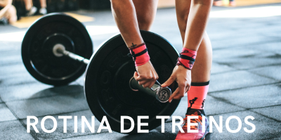

-
Quais
são os benefícios de comer frutas 3x ao dia?
Comer frutas três vezes ao dia pode trazer vários benefícios à saúde, tais
como:
Fornecimento de vitaminas e minerais: As frutas são ricas em vitaminas e
minerais
que são essenciais para o corpo.
Aumento da ingestão de fibras: As frutas contêm
fibras que ajudam a manter o
trato digestivo saudável, prevenindo problemas como constipação e diarreia.
-
Por
que menter uma dieta limpa e comida caseira?
Maior controle sobre os ingredientes: Isso pode ajudar a reduzir a ingestão de
aditivos artificiais, conservantes e açúcares adicionados.
Mais nutrientes: Esses
alimentos são geralmente mais ricos em vitaminas e
minerais do que os alimentos processados.
Menor risco de contaminação: Quando você prepara alimentos em casa, pode garantir
que os alimentos sejam manuseados e preparados adequadamente, reduzindo assim o risco de
contaminação por bactérias ou vírus.
-

Por
que dormir bem para conseguir manter uma alimentação saudável?
Regulação do apetite: A privação do sono pode interferir na regulação do apetite,
levando a desejos por alimentos mais calóricos e com maior teor de açúcar e
gordura.
Maior energia e disposição: Uma boa noite de sono ajuda a renovar a
energia do
corpo, o que pode levar a uma maior disposição para realizar atividades físicas e cozinhar
refeições saudáveis.
-

Qual a
relação entre uma boa alimentação e uma rotina de treinos?
Uma boa alimentação é essencial para uma rotina de treinos eficaz. Quando você se exercita,
seu corpo precisa de energia para realizar os movimentos e se recuperar dos esforços
físicos. A alimentação correta ajuda a fornecer essa energia, além de garantir que seu corpo
esteja recebendo os nutrientes necessários para se manter saudável e funcionando bem.
Clique e DESCUBRA: receitas
saudáveis, facéis e incríveis!
Além de: rotinas práticas
de treino pro seu cotidiano!